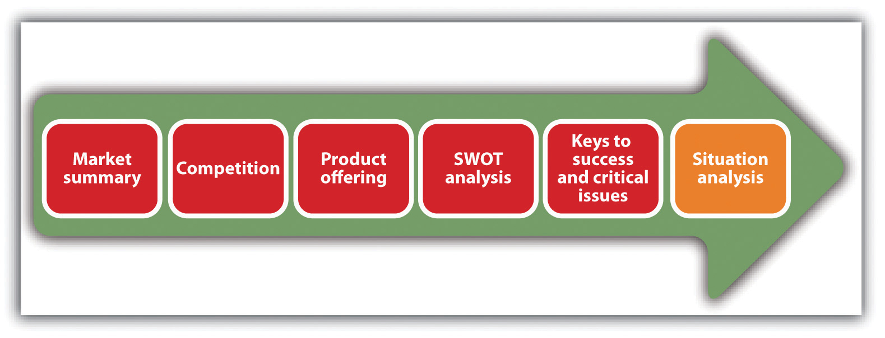
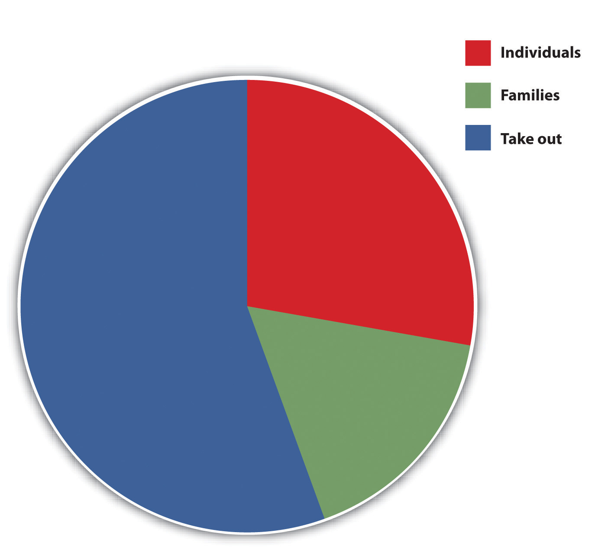
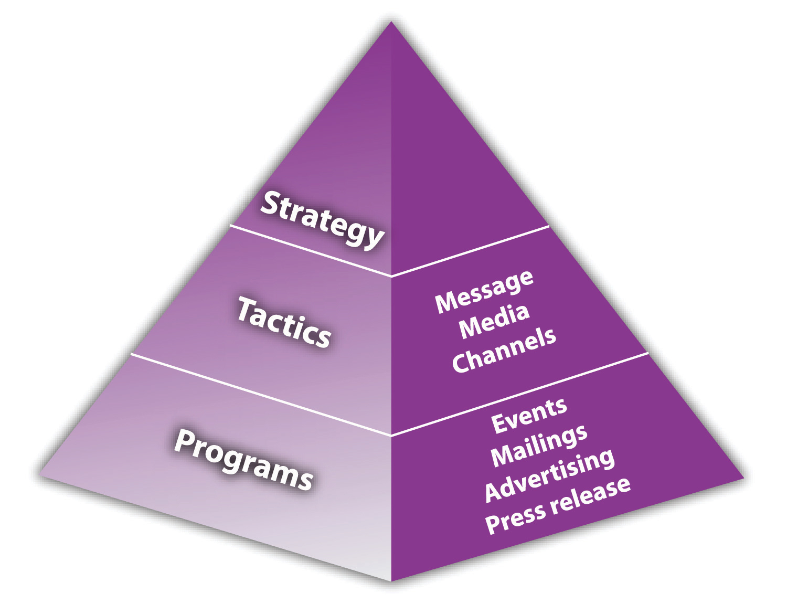
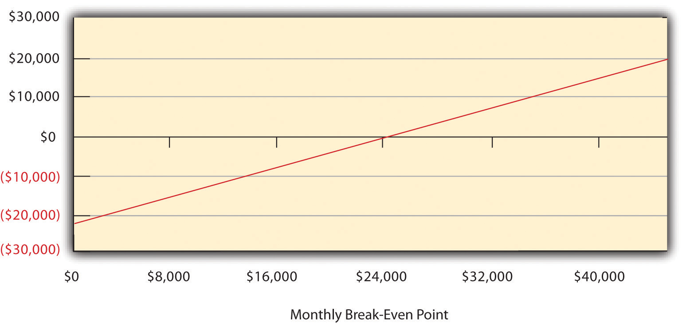
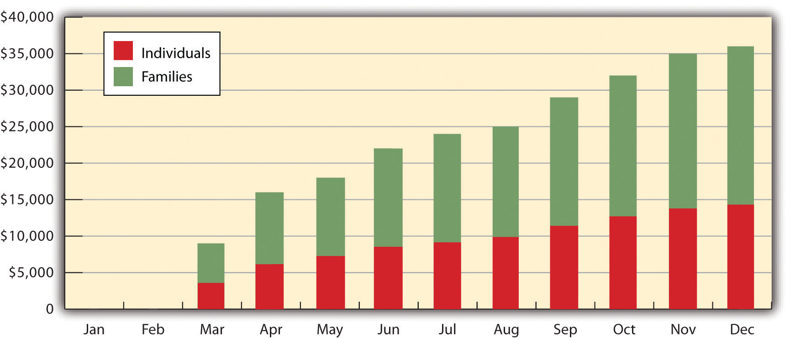
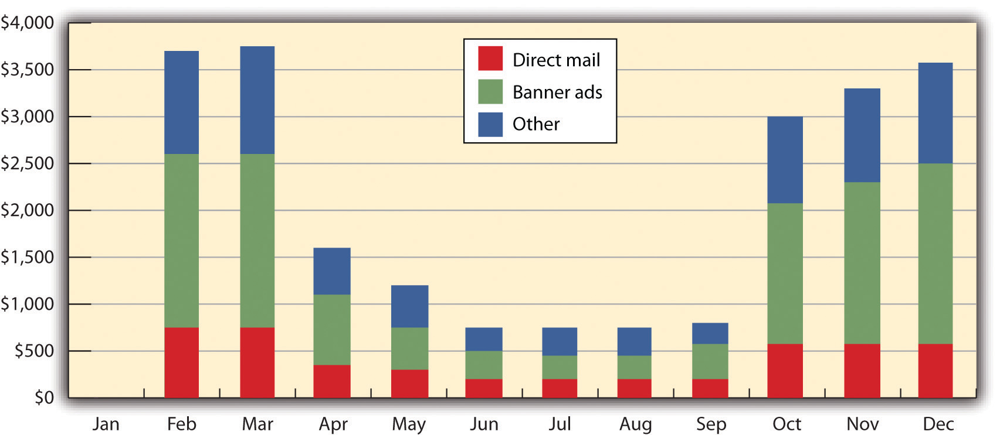

Although there is no universally accepted format for a marketing plan, the requirements can be grouped into the seven sections identified in Figure 8.1 "The Marketing Plan". The marketing plan can be a stand-alone document or a section of the business plan. If it is part of the business plan, it will duplicate information that is presented in other sections of the business plan.
A solid marketing strategy is the foundation of a well-written marketing plan,Cash Miller, “Why Does Your Business Need a Good Marketing Plan?,” Yesformn, October 27, 2010, accessed December 2, 2011, www.yesformn.org/why-does-your -business-need-a-good-marketing-plan.php. and the marketing strategy should have onground and online components if the small business has or wants to have a web presence. The online portion of the marketing plan should be a plan that can be implemented easily, be changed rapidly as appropriate, and show results quickly.“An Online Marketing Plan for the Small Business Owner,” WebMarketingNow, accessed December 1, 2011, www.webmarketingnow.com/who/who_business _owner.html.
Figure 8.1 The Marketing Plan

The executive summary is a one- to two-page synopsis of a company’s marketing plan. The summary gives a quick overview of the main points of the plan, a synopsis of what a company has done, what it plans to do, and how it plans to get there.“How to Write a Marketing Plan,” Arizona Office of Tourism, accessed December 1, 2011, www.azot.gov/documents/Marketing_Tool_Kit.pdf. The executive summary is for the people who lack the time and interest to read the entire marketing plan but who need a good basic understanding of what it is about.“Marketing Plan: The Executive Summary,” Small Business Notes, accessed December 1, 2011, www.smallbusinessnotes.com/starting-a-business/marketing-plan-the -executive-summary.html.
Sigmund’s Gourmet Pasta
Note: The marketing plan for Sigmund’s Gourmet Pasta is a sample small business marketing plan provided by and copyrighted by Palo Alto Software. Permission has been given to the authors to use this plan as the basis for this chapter. This plan will be used throughout this chapter to illustrate marketing plan concepts. Additional complete sample marketing plans for small businesses are available at http://www.mplans.com.
Sigmund’s Gourmet Pasta will be the leading pasta restaurant in Eugene, Oregon, with a rapidly developing consumer brand and growing customer base. The signature line of innovative, premium pasta dishes include pesto with smoked salmon, pancetta and peas linguine in an Alfredo sauce, lobster ravioli in a lobster sauce, and fresh mussels and clams in a marinara sauce. Sigmund’s Gourmet Pasta also serves distinct salads, desserts, and beverages. All desserts are made on-site.
Sigmund’s Gourmet Pasta will reinvent the pasta experience for individuals, families, and takeout customers with discretionary income by selling high-quality, innovative products at a reasonable price; designing tasteful, convenient locations; and providing industry-benchmark customer service. Our web presence enhances our brand.
To grow at a rate consistent with our objectives, Sigmund’s is offering an additional $500,000 in equity. Existing members will be given the first option to subscribe to the additional equity to allow each of them to maintain their percentage of ownership. The portion not subscribed by existing members will be available to prospective new investors.Adapted from “Pasta Restaurant Marketing Plan: Sigmund’s Gourmet Pasta,” Mplans.com, accessed December 1, 2011, www.mplans.com/pasta_restaurant _marketing_plan/executive_summary_fc.php.
The vision statementA document that articulates the long-term purpose and idealized notion of what the business wishes to become. tries to articulate the long-term purpose and idealized notion of what the business hopes to be in terms of growth, values, employees, contributions to society, and so forth—that is, where the owner sees the business going. Self-reflection by the business founder is a vital activity if a meaningful vision is to be developed.Jay Ebben, “Developing Effective Vision and Mission Statements,” Inc., February 1, 2005, accessed December 2, 2011, www.inc.com/resources/startup/articles/20050201/missionstatement.html.
Mobile News Games: Developer of Mobile Games Relating to Current News Events
“Our vision is to provide people with a brief escape of fun over the course of their normal day. We do this by providing them with timely interactive games that they can access on their mobile devices—games that are easy to play and have some connection with current pop culture news.”“Sample Marketing Plan,” MoreBusiness.com, accessed December 1, 2011, www.morebusiness.com/templates_worksheets/bplans/printpre.brc.
Neon Memories Diner
“Neon Memories Diner is a place for family togetherness organized around a common love of the traditional American diner and the simpler times of the ’50s and ’60s. Neon Memories Diner transcends a typical theme restaurant by putting real heart into customer service and the quality of its food so that its unique presentation and references to times past are just part of the picture.”“Restaurant Marketing Plan: Neon Memories Diner,” MPlans.com, accessed December 2, 2011, www.mplans.com/restaurant_marketing_plan/marketing_vision_fc.php.
By contrast, the mission statementA document that articulates the fundamental nature of the business. It should address what business the company is in, the company’s potential customers, and how customer value will be provided. for the marketing plan looks to articulate the more fundamental nature of the business (i.e., why the business exists). A company’s mission is its sense of purpose—the reason why the owner gets up every day and does what he or she does. It captures the owner’s values and visions, along with that of the employees (if applicable) and community plus suppliers and stakeholders. It literally is the foundation of a company’s future.Corte Swearingen, “Writing a Mission Statement,” SmallBiz Marketing Tips, accessed December 2, 2011, www.small-biz-marketing-tips.com/writing-a-mission- statement.html. As such, the mission statement is an important foundation of a business’s marketing plan. It is common for the mission statement to appear in the marketing strategy section of the marketing plan. It is also common for the plan to include either a vision statement or a mission statement but not both.
Disney
“To make people happy.”Corte Swearingen, “Writing a Mission Statement,” SmallBiz Marketing Tips, accessed December 2, 2011, www.small-biz-marketing-tips.com/writing-a-mission -statement.html.
Coca-Cola
“To Refresh the World…in body, mind, and spirit.”Corte Swearingen, “Writing a Mission Statement,” SmallBiz Marketing Tips, accessed December 2, 2011, www.small-biz-marketing-tips.com/writing-a-mission -statement.html.
Organic Body Products, Inc. (Small Business)
“To provide high-quality skincare and body care products to women who want what goes on their bodies to have as high a quality as what goes in their bodies.”Kristie Lorette, “Examples of How to Write a Marketing Plan,” Chron.com, accessed December 2, 2011, smallbusiness.chron.com/examples-write-marketing-plan -1689.html.
Sigmund’s Gourmet Pasta (Small Business)
“Sigmund’s Gourmet Pasta’s mission is to provide the customer the finest pasta meal and dining experience. We exist to attract and maintain customers. When we adhere to this maxim, everything else will fall into place. Our services will exceed the expectations of customers.”“Pasta Restaurant Marketing Plan: Sigmund’s Gourmet Pasta,” Mplans.com, accessed December 1, 2011, www.mplans.com/pasta_restaurant_marketing_plan/marketing_strategy_fc.php.
The situation analysisA picture of where a business is now in the market, detailing the context for its marketing efforts. gives a picture of where a company is now in the market and details the context for its marketing efforts (see Figure 8.2 "Situation Analysis"). Although individual analyses will vary, the contents will generally include relevant information about current products or services, sales, the market (defining it and determining how big it is and how fast it is growing), competition, target market(s), trends, and keys to success. These factors can be combined to develop a SWOT analysisAn identification of a company’s strengths, weaknesses, opportunities, and threats.—an identification of a company’s strengths, weaknesses, opportunities, and threats—to help a company differentiate itself from its competitors.
Figure 8.2 Situation Analysis
As the title implies, the market summaryWhat is known about the market in which a company competes, plans to compete, or both. summarizes what is known about the market in which a company competes, plans to compete, or both. This summary may be all that is read, so it must be short and concise. The market summary should include a description of the market and its attributes, market needs, market trends, and market growth. See Figure 8.3 "Market Summary".
Figure 8.3 Market Summary
Introductory Paragraph: Sigmund’s Gourmet Pasta
Sigmund’s Gourmet Pasta possesses good information about the market and knows a great deal about the common attributes of our most prized and loyal customers. Sigmund’s Gourmet Pasta will leverage this information to better understand who is served, their specific needs, and how Sigmund’s can better communicate with them.“Pasta Restaurant Marketing Plan: Sigmund’s Gourmet Pasta,” Mplans.com, accessed December 1, 2011, www.mplans.com/pasta_restaurant_marketing_plan/marketing_strategy_fc.php.
This section of the marketing plan is where a company’s customers are identified. If a business has an online presence or wants to have one, information needs to be generated for online customers as well. Some, perhaps most but not all, of a company’s online customers will come from the company’s onground customers. This depends on the company’s marketing strategy. However, a web presence can considerably expand a company’s market.
The information that should be provided about customers is as follows:Adapted from “Marketing,” University of Missouri, January 2010, accessed December 2, 2011, www.missouribusiness.net/sbtdc/docs/marketing.pdf.
Figure 8.4 Target Markets—Sigmund’s Gourmet Pasta
Source: “Pasta Restaurant Marketing Plan: Sigmund’s Gourmet Pasta: Situation Analysis,” Mplans.com, accessed December 2, 2011, http://www.mplans.com/pasta_restaurant_marketing_plan/situation_analysis_fc.php. Reprinted by permission of Palo Alto Software.
In 2010, the global pasta market reached $8 billion. Pasta sales are estimated to grow by at least 10 percent for the next few years. This growth can be attributed to several different factors. The first factor is an appreciation for health-conscious food. Although not all pasta is “good for you,” particularly cream-based sauces, pasta can be very tasty yet health conscious at the same time. Pasta is seen as a healthy food because of its high percentage of carbohydrates relative to fat.
Another variable that contributes to market growth is an increase in the number of hours our demographic is working. Over the last five years, the number of hours spent at work of our archetype customer has significantly increased. As the number of work hours increases, there is a high correlation of people who eat out at restaurants. This is intuitively explained by the fact that with a limited number of hours available each day, people have less time to prepare their meals, and eating out is one way to maximize their time.Adapted from “Pasta Restaurant Marketing Plan: Sigmund’s Gourmet Pasta,” Mplans.com, accessed December 1, 2011, www.mplans.com/pasta _restaurant_marketing_plan/marketing_strategy_fc.php.
Table 8.1 Projected Market Growth—Sigmund’s Gourmet Pasta*
| Potential Customers | Growth (%) | 2011 | 2012 | 2013 | 2014 | 2015 | CAGR (%)** |
|---|---|---|---|---|---|---|---|
| Individuals | 8 | 12,457 | 13,454 | 14,530 | 15,692 | 16,947 | 8.00 |
| Families | 9 | 8,974 | 9,782 | 10,662 | 11,622 | 12,668 | 9.00 |
| Takeout | 10 | 24,574 | 27,031 | 29,734 | 32,707 | 35,978 | 10.00 |
| TOTAL | 9.27 | 46,005 | 50,267 | 54,926 | 60,021 | 65,593 | 9.27 |
| *All numbers are hypothetical. | |||||||
| ** Compound annual growth rate. | |||||||
Source: Adapted from “Pasta Restaurant Marketing Plan: Sigmund’s Gourmet Pasta,” Mplans.com, accessed December 1, 2011, http://www.mplans.com/pasta_restaurant_marketing_plan/marketing_strategy_fc.php.
Sigmund’s Gourmet Pasta is providing its customers with a wide selection of high-quality pasta dishes and salads that are unique and pleasing in presentation, offering a wide selection of health-conscious choices, and using top-shelf ingredients. Sigmund’s Gourmet Pasta seeks to fulfill the following benefits that are important to their customers:
The market trend for restaurants is headed toward a more sophisticated customer. The restaurant patron today relative to yesterday is more sophisticated in several different ways.
The reason for this trend is that within the last few years, restaurant offerings have increased, providing customers with new choices. Restaurant patrons no longer need to accept a limited number of options. With more choices, patrons have become more sophisticated. This trend is intuitive as you can observe a more sophisticated patron in larger city markets such as Seattle, Portland, or New York, where there are more choices. People are also increasingly expecting a web presence for restaurants. This presence includes a website, a membership on Facebook, and oftentimes a Twitter presence. The importance of a website and the use of social media cannot be underestimated.
Every marketing plan should include an assessment of the competition: who they are, what they offer, their growth rates (if known), and their market share (if known). Market share is defined as the percentage of total sales volume in a market that is captured by a brand, a product, or a company.“Market Share,” BusinessDictionary.com, accessed December 1, 2011, www.businessdictionary.com/definition/market-share.html. Think of the market as a pie, with each slice being a “share” of that pie. The larger the slice, the larger the percentage of sales volume captured by a brand, a product, or a company. With all this knowledge, a business will be in the best position to differentiate itself in the marketplace. However, while the sales figures of a business are easily accessible, it is not likely that the owner will have either total market sales figures or growth rate, sales figures, and market share information for the competition. This information, if available at all, is usually available from trade associations and market research firms,“Market Share,” QuickMBA, accessed December 1, 2011, www.quickmba.com/marketing/market-share. with the likelihood being even less if the information desired is about other small businesses. Competitor websites and Internet searches may prove helpful, but because most small businesses are privately held, the information available online will be limited. As a result, you will be restricted in the information that you can collect about the competition to things that can easily be observed in person or are available on company websites. Examples include product selection, price points, service quality, and product quality.
Competition should be addressed in terms of being direct or indirect. Direct competitionCompetition from similar businesses or products. refers to competition from similar businesses or products, whereas indirect competitionCompetition from alternative, substitutable businesses or products. refers to competition from alternative, substitutable businesses or products. In the case of Sigmund’s Gourmet Pasta, direct competition would come from other restaurants that serve pasta. Indirect competition would come from other types of full-service restaurants, fast food, the freezer- or prepared-foods areas in the grocery store, delis, preparation services that target the home, and even online businesses that sell prepared foods (DineWise). Many if not most small business marketing plans address only direct competition.
National Competition
Local Competition
The marketing plan must be very clear about the product or the service that is being offered to the marketplace because the product drives the creation of the marketing mix and the marketing strategy. An error in product identification and definition can wreak havoc in the company and in the marketplace because misdirected marketing actions can occur. The responsibility for the product definitions rests squarely with the owner. For example, if a business is a live theater that features very sophisticated plays, would you define the product as entertainment or art? The answer to this question will have major implications for a company’s marketing strategy.
The product or the service offering must also consider a company’s website because a web presence will be an important part of what is offered to customers.
Sigmund’s has created gourmet pastas and salads that are differentiated and superior to competitors. Customers can taste the quality and freshness of the product in every bite. The following are the characteristics of the product:
At Sigmund’s, food is not a product; the experience of dining is a service. Sigmund’s prides itself on providing service that is on par with fine dining. This is accomplished through an extensive training program and hiring only experienced employees.“Pasta Restaurant Marketing Plan: Sigmund’s Gourmet Pasta,” Mplans.com, accessed December 1, 2011, www.mplans.com/pasta_restaurant_marketing_plan/marketing_strategy_fc.php.
At a Glance—The Prototype Sigmund’s Store
Sigmund’s websiteThis information about the Sigmund’s website is a combination of the ideas of the authors of this textbook and the following two sample marketing plans: “Locally Produced Clothing Retailer Marketing Plan: Local Threads,” MPlans.com, accessed December 2, 2011, www.mplans.com/locally_produced_clothing_retailer _marketing_plan/marketing_vision_fc.php; “Restaurant Marketing Plan: Neon Memories Diner,” MPlans.com, accessed December 2, 2011, www.mplans.com/restaurant_marketing_plan/marketing_vision_fc.php. will educate prospects with an eye toward encouraging them to try the restaurant and then return. Site visitors will be informed about the menu and the restaurant’s commitment to quality in using homemade pasta made with Italian semolina flour, imported cheeses, organic vegetables that are delivered three times a week, and top-shelf meats. The website will not sell things directly.
Prospective customers will be encouraged through the warm and friendly atmosphere of the website. A photo gallery will provide a visual tour of the restaurant to demonstrate its décor and atmosphere. The pages of the website will include the following:
A SWOT analysis combines the key strengths and weaknesses within a company with an assessment of the opportunities and threats that are external to the company. This analysis can provide powerful insights into the potential and critical issues affecting a business.Tim Berry, “How to Perform a SWOT Analysis,” MPlans.com, accessed December 2, 2011, articles.mplans.com/how-to-perform-a-swot-analysis. A strength is an asset or a resource, tangible or intangible, internal to a company that is within its control. What does the company do well? What advantages does the company have over its competition? You should look to identify the positive aspects internal to a business that add value or offer a competitive advantage.“How to Write a Marketing Plan,” Arizona Office of Tourism, accessed December 1, 2011, www.azot.gov/documents/Marketing_Tool_Kit.pdf; Tim Berry, “How to Perform a SWOT Analysis,” MPlans.com, accessed December 2, 2011, articles.mplans.com/how-to-perform-a-swot-analysis. Examples of strengths are the quality of employees, company reputation, available capital and credit, established customers, unique channels of distribution, intellectual property, location, and facilities.
Rebirth of the American-Made Baseball Mitt
The strengths of the Insignia company.
money.cnn.com/video/smallbusiness/2011/05/05/sbiz_baseball_mitt.cnnmoney
A weakness is a factor internal to a company that may cause it to have a less competitive position in the marketplace. A company can have control over this factor and should look to improve or remove it to successfully accomplish its marketing objectives. Weaknesses detract from the value of a business. Examples of weaknesses are lack of expertise, limited resources, bad location, poor facilities, inferior customer service and customer experience, difficulty in hiring and retaining good people, and weak brand recognition.
An opportunity is an attractive external factor that represents the reason a business exists and prospers. You have no control over opportunities, but you can take advantage of them to benefit the business. Opportunities will come from the market, the environment, or the competition, and they reflect the potential that can be realized through marketing strategies.Tim Berry, “How to Perform a SWOT Analysis,” MPlans.com, accessed December 2, 2011, articles.mplans.com/how-to-perform-a-swot-analysis. Examples of opportunities include market growth, a competitor going out of business, lifestyle changes, demographic changes, and an increased demand for a product or a service.
Vinyl Makes a Comeback
A small company in Brooklyn, New York, takes advantage of the opportunity presented by the surging interest in vinyl records.
money.cnn.com/video/smallbusiness/2011/04/15/sbiz_vinyl_comeback.cnnmoney
A threat is an external factor beyond a company’s control that could place a marketing strategy, or the business itself, at risk. Threats come from an unfavorable trend or development that could lead to deteriorating revenues or profits (such as high gasoline prices); a new competitor that enters the market; a public relations (PR) nightmare that leads to devastating media coverage; a gender discrimination lawsuit; a shift in consumer tastes and behavior that reduces sales; government regulation; an economic slump; or the introduction of a “leap frog” technology that may make a company’s products, equipment, or services obsolete.Tim Berry, “How to Perform a SWOT Analysis,” MPlans.com, accessed December 2, 2011, articles.mplans.com/how-to-perform-a-swot-analysis. Threats can come from anywhere and at any time, and a small business may be particularly vulnerable because of its size. At the same time, a small business may be nimble enough to effectively deal with threats because of its small size.
Historic Paper Company Thrives
Surviving threats and taking advantage of opportunities.
money.cnn.com/video/smallbusiness/2010/08/06/sbiz_hwgs_crane.cnnmoney
Performing a SWOT analysis is a valuable exercise. It might help an owner identify the most promising customers, perhaps even the ideal customer. The analysis is meant to improve a customer’s experience with a company, so the person who will benefit most from a SWOT analysis is the customer.Corte Swearingen, “Marketing SWOT Analysis,” SmallBiz Marketing Tips, accessed December 2, 2011, www.small-biz-marketing-tips.com/marketing-swot-analysis .html.
The keys to successThe factors that, if achieved, will lead to a profitable and a sustainable business. are those factors that, if achieved, will lead to a profitable and a sustainable business. Identifying these factors should be based on an understanding of the industry or the market in which a small business is competing because these things play a critical role in success and failure.
Focusing on three to five of the most important success factors makes sense for a small business. However, the actual number will be a function of the business. Whatever the number, the keys to success may change from time to time or year to year as the industry or the market changes.Kris Bovay, “Build a Successful Marketing Plan—15 Key Business Success Factors,” eZine @rticles, accessed December 2, 2011, ezinearticles.com/?Build-a -Successful-Marketing-Plan—15-Key-Business-Success-Factors&id=2156709. Examples of key success factors include the hiring and retention of excellent employees, successful new product introductions, a strong supplier network, a low-cost structure, retaining existing customers, a strong distribution network or channel,Kris Bovay, “Build a Successful Marketing Plan—15 Key Business Success Factors,” eZine @rticles, accessed December 2, 2011, ezinearticles.com/?Build-a -Successful-Marketing-Plan—15-Key-Business-Success-Factors&id=2156709. a cutting edge manufacturing process, and customer service.
Location, location, location.
Sigmund’s site selection criteria are critical to its success. Arthur Johnson, the former vice president of real estate for Starbucks, helped us identify the following site selection criteria:
Sigmund’s Gourmet Pasta is still in the speculative stage as a retail restaurant. Its critical issues are as follows:
The marketing strategy section of the marketing plan involves selecting one or more target markets, deciding how to differentiate and position the product or the service, and creating and maintaining a marketing mix that will hopefully prove successful with the selected target market(s)—all within the context of the marketing objectives. It also includes a web strategy for the small businesses that have or want to have a web presence. By aligning online marketing with onground efforts, a company will be in a much stronger position to accomplish marketing and overall company objectives. It will also be presenting a consistent style and message across all points of contact with its target audience.Bobette Kyle, “Internet Marketing Strategy: Developing a Website Marketing Plan,” WebSiteMarketingPlan.com, accessed December 1, 2011, www.websitemarketingplan.com/marketing_management/MarketingPlanningArticle.htm.
Sigmund’s advertising budget is very limited, so the advertising program is simple. Sigmund’s will do direct mail, banner ads, and inserts in the Register Guard, which are likely to be the most successful of the campaigns. (We will also use our website and social media to promote the business.) Lastly, Sigmund’s will leverage personal relationships to get articles about Sigmund’s in the Register Guard. Friends who have had their restaurants featured in the Register Guard have seen a dramatic increase of sales immediately after the article was published.Adapted from “Pasta Restaurant Marketing Plan: Sigmund’s Gourmet Pasta,” Mplans.com, accessed December 1, 2011, www.mplans.com/pasta _restaurant_marketing_plan/marketing_strategy_fc.php.
Marketing objectivesWhat a company wants to accomplish with its marketing strategy. are what a company wants to accomplish with its marketing strategy. They lay the groundwork for formulating the marketing strategy, and although formulated in a variety of ways, their achievement should lead to sales. The creation of marketing objectives is one of the most critical steps a business will take. Both online and onground objectives must be included. A business must know, as precisely as possible, what it wants to achieve before allocating any resources to the marketing effort.
You should note that the first and third objectives in this sample marketing plan do not meet some of the SMART criteria—specific, measurable, achievable, realistic, and time-based (a stated time frame for achievement). These two objectives are not specific enough to be measurable, and they may not be realistic. This will make it difficult to determine the extent to which they have been or can be accomplished.
The target market is the segment that has been identified as having the greatest potential for a business. A segment is a relatively homogeneous subgroup that behaves much the same way in the marketplace. The identification of segments is a necessary precursor to selecting a target market. The more precise the target market is, the easier it will be to create a marketing mix that will appeal to the target market.
The market can be segmented into three target populations.
Sigmund’s customers are hungry individuals between the ages of 25 and 50, making up 53 percent of Eugene (according to the Eugene Chamber of Commerce). Age is not the most defined demographic of this customer base, as all age groups enjoy pasta. The most defined characteristic of the target market is income. Gourmet pasta stores have been very successful in high-rent, mixed-use urban areas, such as Northwest 23rd Street in Portland. These areas have a large day and night population consisting of businesspeople and families who have household disposable incomes over $40,000.
Combining several key demographic factors, Sigmund’s profile of the primary customer is as follows:
The positioningPlacing the brand (whether store, product, or service) in the consumer’s mind in relation to other competing products, based on product traits and benefits that are relevant to the consumer. section of the marketing plan reflects the decisions that have been made about how a company plans to “place” its business in a consumer’s mind in relation to the competition. Is a particular business seen as a high-priced or a low-priced alternative? Is a business considered a high-quality or a medium-quality alternative? Is the delivery time to customers better, worse, or the same as that of the competition? There are many different approaches to positioning that the small business owner should consider, but the selected approach should be the one that puts the company or the brand in the best light. Keep in mind that a good positioning strategy will come from a solid understanding of the market, the customer, and the competition because this knowledge will provide a basis for comparing one business with others.
Sigmund’s Gourmet Pasta will position itself as a reasonably priced, upscale, gourmet pasta restaurant. Eugene consumers who appreciate high-quality food will recognize the value and unique offerings of Sigmund’s Gourmet Pasta. Patrons will be singles and families, ages twenty-five to fifty.
Sigmund’s Gourmet Pasta positioning will leverage its product and service competitive edge:
By offering a superior product, coupled with superior service, Sigmund’s will excel relative to the competition.“Pasta Restaurant Marketing Plan: Sigmund’s Gourmet Pasta,” Mplans.com, accessed December 1, 2011, www.mplans.com/pasta_restaurant_marketing_plan/marketing_strategy_fc.php.
Small Business Market Position
(click to see video)Market position refers to how the general public views the business or the product.
Small Business Market Position Tips
(click to see video)Choose a unique position for a business or a product.
Choosing a Small Business Market Position
(click to see video)Look ten to fifteen years into the future when thinking about positioning.
The marketing strategy pyramidAssumes that the marketing strategy is built on concrete tactics that are specific, measurable marketing programs—activities with budgeted expenses, well-defined responsibilities, deadlines, and measurable results. assumes that the marketing strategy is built on concrete tactics that are built on specific, measurable marketing programs—activities with budgeted expenses, well-defined responsibilities, deadlines, and measurable results.Tim Berry, “What Is the Marketing Strategy Pyramid, Where Did It Come From?,” BPlans, accessed June 1, 2012, http://www.bplans.com/ask-bplans/640/what-is-the -marketing-strategy-pyramid-where-did-it-come-from.
Figure 8.5 Marketing Strategy Pyramid
Source: Tim Berry, “What Is the Marketing Strategy Pyramid, Where Did It Come From?,” BPlans, accessed December 2, 2011, http://www.bplans.com/ask-bplans/640/what-is-the-marketing-strategy-pyramid-where-did-it-come-from.
The strategy at the top of Figure 8.5 "Marketing Strategy Pyramid" focuses on well-defined markets and user needs. The second level consists of the tactics that you use to satisfy user needs and communicate with the target market. The third level is where specific programs are defined.Tim Berry, “What Is the Marketing Strategy Pyramid, Where Did It Come From?,” BPlans, accessed June 1, 2012, http://www.bplans.com/ask-bplans/640/what-is-the -marketing-strategy-pyramid-where-did-it-come-from. It is this framework that is built into the sample marketing plans that are available through Palo Alto Software in Sales and Marketing Pro and at www.mplans.com. However, it is a solid approach that can be used in any marketing planning situation.
The single objective is to position Sigmund’s as the premier gourmet pasta restaurant in the Eugene, Oregon, area, commanding a majority of the market share within five years. The marketing strategy will seek to first create customer awareness regarding the services offered, develop that customer base, and work toward building customer loyalty and referrals.
The message that Sigmund’s will seek to communicate is that Sigmund’s offers the freshest, most creative, health-conscious, reasonably priced, gourmet pasta in Eugene. This message will be communicated through a variety of methods. The first will be direct mail. The direct mail campaign will be a way to communicate directly with the consumer. Sigmund’s will also use banner ads and inserts in the Register Guard. This will be particularly effective because the Register Guard is a popular local paper that is consulted when people are looking for things to do in Eugene. The restaurant’s website will also encourage patronage because the warm and friendly atmosphere of the site will reflect the atmosphere of the actual restaurant. Facebook and Twitter followers along with customer comments will also add to brand awareness.The website and social media are additions to “Pasta Restaurant Marketing Plan: Sigmund’s Gourmet Pasta,” Mplans.com, accessed December 1, 2011, www.mplans.com/pasta_restaurant_marketing_plan/marketing_strategy_fc.php.
The last method for communicating Sigmund’s message is through a grassroots PR campaign. This campaign will leverage personal relationships with people on the staff of the Register Guard to get a couple of articles written about Sigmund’s. One will be from the business point of view, talking about the opening of the restaurant and the people behind the venture. This is likely to be run in the business section. The second article will be a food review. In speaking with many different retailers and restaurateurs, significant increases of traffic have followed articles in the Register Guard. Because of this level of effectiveness and low/zero cost, Sigmund’s will work hard to get press in the Register Guard.“Pasta Restaurant Marketing Plan: Sigmund’s Gourmet Pasta,” Mplans.com, accessed December 1, 2011, www.mplans.com/pasta_restaurant_marketing_plan/marketing_strategy_fc.php.
A company’s marketing mix is its unique approach to product, price, promotion, and place (distribution)—the four Ps. The marketing mix is the central activity in the implementation of a company’s marketing strategy, so the decisions must be made carefully. It is through the marketing mix that marketing objectives will be achieved. The final determination of the marketing mix requires inputs from other areas, such as purchasing, manufacturing, sales, human resources, and finance.Philip Kotler and Kevin Lane Keller, Marketing Management (Upper Saddle River, NJ: Pearson Prentice Hall, 2009), 57.
Sigmund’s marketing mix consists of the following approaches to pricing, distribution, advertising and promotion, and customer service.
How To Use Twitter For Business
(click to see video)A tutorial about using Twitter for business.
What a Business Needs to Do to Connect More on Twitter
(click to see video)A humorous look at why a business should use a picture, not its business logo, on Twitter.
Marketing research is about gathering the information that is needed to make business decisions, which should be an ongoing process. A marketing plan should be based on marketing research. The research can range from something very simple conducted by the owner or an employee to a more sophisticated study that is prepared by a marketing research firm. The overall goal of the research, however, is to help a company offer products that people will want, at an appealing price, in the place where they want to buy them. The research should also help a company decide how to promote its products so that people will be aware of them. People cannot buy what they do not know about.
During the initial phases of developing the marketing plan, several focus groups were held to gain insight into a variety of patrons of restaurants. These focus groups provided useful insight into the decisions and decision-making processes of consumers.
An additional source of dynamic market research is a feedback mechanism based on a suggestion card system. The suggestion card system has several statements that patrons are asked to rate in terms of a given scale. There are also several open-ended questions that allow the customer to freely offer constructive criticism or praise. Sigmund’s will work hard to implement reasonable suggestions to improve its service offerings as well as show its commitment to customers that their suggestions are valued. This suggestion system will also be incorporated into our website so that customers can provide feedback online.The authors of this textbook added the online suggestion system.
The last source of market research is competitive analysis and appreciation. Sigmund’s will continually patronize local restaurants for two reasons. The first is for competitive analysis, providing Sigmund’s with timely information regarding the service offerings of other restaurants. The second reason is that local business owners, particularly restaurant owners, are often part of an informal fraternal organization where they support each other.“Pasta Restaurant Marketing Plan: Sigmund’s Gourmet Pasta,” Mplans.com, accessed December 1, 2011, www.mplans.com/pasta_restaurant_marketing_plan/marketing_strategy_fc.php.
The financials section of the marketing plan should provide a financial overview of the company as it relates to the marketing activities. Typically addressed in this section are the breakeven analysis, a sales forecast, and an expense forecast and how they link to the marketing strategy.“Pasta Restaurant Marketing Plan: Sigmund’s Gourmet Pasta,” Mplans.com, accessed December 1, 2011, www.mplans.com/pasta_restaurant_marketing_plan/marketing_strategy_fc.php.
A breakeven analysisUsed to determine the amount of sales volume a company needs to start making a profit: when its total sales or revenues equal its total expenses. is used to determine the amount of sales volume a company needs to start making a profit.Susan Ward, “Breakeven Analysis,” About.com, accessed December 1, 2011, sbinfocanada.about.com/cs/startup/g/breakevenanal.htm. A company has broken even when its total sales or revenues equal its total expenses. However, a breakeven analysis is not a predictor of demand, so if a company goes into the marketplace with the wrong product or the wrong price, it may never reach the break-even point.Daniel Richards, “How to Do a Breakeven Analysis,” About.com, accessed December 1, 2011, entrepreneurs.about.com/od/businessplan/a/breakeven.htm.
The most relevant types of costs that must be considered when preparing a breakeven analysis are fixed costsCosts that remain the same regardless of the amount of sales (e.g., rent). and variable costsCosts that vary directly with the number of units of product or the amount of service provided.. Fixed costs are costs that must be paid whether or not any units are produced or any services are delivered. They are “fixed” over a specified period of time or range of production. Rent, insurance, and computers would be considered fixed costs because they are outlays that must occur before a company makes its first sale.Daniel Richards, “How to Do a Breakeven Analysis,” About.com, accessed December 1, 2011, entrepreneurs.about.com/od/businessplan/a/breakeven.htm; Susan Ward, “Breakeven Analysis,” About.com, accessed December 1, 2011, sbinfocanada.about.com/cs/startup/g/breakevenanal.htm.
Variable costs are recurring costs that must be absorbed with each unit or service sold. These costs vary directly with the number of units of product or the amount of service provided.Daniel Richards, “How to Do a Breakeven Analysis,” About.com, accessed December 1, 2011, entrepreneurs.about.com/od/businessplan/a/breakeven.htm; Susan Ward, “Breakeven Analysis,” About.com, accessed December 1, 2011, sbinfocanada.about.com/cs/startup/g/breakevenanal.htm. Labor costs and the cost of materials are examples of variable costs.
Figure 8.6 Sigmund’s Breakeven Analysis
Break-even point = where line intersects with 0
Source: “Pasta Restaurant Marketing Plan: Sigmund’s Gourmet Pasta: Situation Analysis,” Mplans.com, accessed December 2, 2011, http://www.mplans.com/pasta_restaurant_marketing_plan/situation_analysis_fc.php. Reprinted by permission of Palo Alto Software.
The breakeven analysis indicates that $23,037 in monthly revenue will be required to reach the break-even point. The analysis assumes a 45 percent annual variable cost and a $22,000 estimated monthly fixed cost.“Pasta Restaurant Marketing Plan: Sigmund’s Gourmet Pasta,” Mplans.com, accessed December 1, 2011, www.mplans.com/pasta_restaurant_marketing_plan/marketing_strategy_fc.php.
A company’s sales forecastThe level of sales expected based on a chosen marketing plan and an assumed marketing environment. is the level of sales that a company expects based on a chosen marketing plan and an assumed marketing environment. The sales forecast does not establish a basis on which to decide how much should be spent on marketing. Rather, it is the result of an assumed marketing expenditure plan.Philip Kotler and Kevin Lane Keller, Marketing Management (Upper Saddle River, NJ: Pearson Prentice Hall, 2009), 112. A sales forecast can be very helpful in creating important milestones for a business. However, it is still an educated guess. No matter what a company forecasts, it will typically make less than expected.“Expense and Sales Forecasting,” Chic-CEO.com, accessed December 2, 2011, www.chic-ceo.com/expense-and-sales-forecasting.
The first two months will be used to get the restaurant up and running. By the third month, things will get busier. Sales will gradually increase, with profitability being achieved by the beginning of the new year.“Pasta Restaurant Marketing Plan: Sigmund’s Gourmet Pasta,” Mplans.com, accessed December 1, 2011, www.mplans.com/pasta_restaurant_marketing_plan/marketing_strategy_fc.php.
Figure 8.7 Sigmund’s Sales Forecast
Source: “Pasta Restaurant Marketing Plan: Sigmund’s Gourmet Pasta: Situation Analysis,” Mplans.com, accessed December 2, 2011, http://www.mplans.com/pasta_restaurant_marketing_plan/situation_analysis_fc.php. Reprinted by permission of Palo Alto Software.
Table 8.2 Sigmund’s Forecast of Sales and Direct Cost of Sales
| Category | 2011 | 2012 | 2013 |
|---|---|---|---|
| Sales | |||
| Individuals | $103,710 | $262,527 | $327,424 |
| Families | $150,304 | $380,474 | $474,528 |
| Total sales | $254,014 | $643,001 | $801,952 |
| Direct Cost of Sales | |||
| Individuals | $46,669 | $118,137 | $147,341 |
| Families | $67,637 | $171,213 | $213,538 |
| Total direct cost of sales | $114,306 | $289,350 | $360,879 |
| Note: Sigmund’s separated sales on the basis of its target market, but it did not include a separate sales forecast for takeout. It should have. | |||
Source: “Pasta Restaurant Marketing Plan: Sigmund’s Gourmet Pasta: Situation Analysis,” Mplans.com, accessed December 1, 2011, http://www.mplans.com/pasta_restaurant_marketing_plan/situation_analysis_fc.php.
A company’s expense forecastA tool that can be used to keep operations on target. is a tool that can be used to keep its operations on target. The forecast will provide indicators when corrections or modifications are needed for the proper implementation of the marketing plan. An expense forecast is vital for a company and its sales goals because it will keep the company on track and keep costs down; however, a company will typically spend much more than expected.“Expense and Sales Forecasting,” Chic-CEO.com, accessed December 2, 2011, www.chic-ceo.com/expense-and-sales-forecasting. If a company is not sure what to include in its expense forecast, there are online templates that can provide assistance (see www.chic-ceo.com/userfiles/ExpenseForecast.pdf for sample templates).
Marketing expenses are to be budgeted so that they are ramped up for months two through four and then lower and plateau from month five to month ten. Restaurants typically have increased business in the fall. This generally occurs because during the summer, when the weather is nice and it does not get dark until late, people tend to eat out less. From month ten to month twelve, the marketing costs will increase again.“Pasta Restaurant Marketing Plan: Sigmund’s Gourmet Pasta,” Mplans.com, accessed December 1, 2011, www.mplans.com/pasta_restaurant_marketing_plan/marketing_strategy_fc.php.
Figure 8.8 Sigmund’s Expense Forecast
Source: “Pasta Restaurant Marketing Plan: Sigmund’s Gourmet Pasta: Situation Analysis,” Mplans.com, accessed December 2, 2011, http://www.mplans.com/pasta_restaurant_marketing_plan/situation_analysis_fc.php. Reprinted by permission of Palo Alto Software.
Table 8.3 Sigmund’s Marketing Expense Budget
| Category | 2011 | 2012 | 2013 |
|---|---|---|---|
| Direct mail | $5,267 | $5,605 | $5,421 |
| Banner ads | $11,704 | $12,455 | $12,047 |
| Other | $7,022 | $7,473 | $7,228 |
| Total sales and marketing expenses | $23,993 | $25,533 | $24,696 |
| Percentage of sales | 9.45% | 3.97% | 3.08% |
| Note: These marketing expenses do not account for website, social media, or coupon redemption expenses, and they do not reflect the cost of preparing marketing materials (e.g., the direct mail pieces, the coupons, and the banner ads). For the sake of convenience, we can include these expenses in the “Other” category. However, there should be separate figures for these expenses. Also, it should be made clear what kinds of expenses are included as “Other.” | |||
Source: “Pasta Restaurant Marketing Plan: Sigmund’s Gourmet Pasta: Situation Analysis,” Mplans.com, accessed December 1, 2011, http://www.mplans.com/pasta_restaurant_marketing_plan/situation_analysis_fc.php.
This last section of a marketing plan outlines what a company will do to implement the plan, evaluate its performance, and monitor and adjust plan implementation through controls. In other words, this section of the plan is all about numbers, results, and timelines.Philip Kotler and Kevin Lane Keller, Marketing Management (Upper Saddle River, NJ: Pearson Prentice Hall, 2009), 57; Emily Suess, “Marketing Plan Basics for Small Business,” Small Business Bonfire, April 13, 2011, accessed December 2, 2011, smallbusinessbonfire.com/marketing-plan-basics-for-small-business-owners.
Implementation is about the day-to-day activities that effectively put a marketing plan into action and focuses on who, where, when, and how: Who will do that? Where to start and when? When to do that? How to do that?Steve Arun, “How to Successfully Implement Your Marketing Plan,” VA4Business, March 14, 2010, accessed December 2, 2011, www.va4business.com/business/428/how-to-successfully-implement-your-marketing-plan. Effective implementation can give a business the edge in a market with similar marketing plans simply because any company that is better and faster at execution is sure to have the advantage in terms of market share.“Implementing Your Marketing Plan,” Marketing Plan Success, accessed December 2, 2011, www.marketing-plan-success.com/articles/controls-implementation.php. This will be true for a small business of any size. There is, however, no such thing as a one-time implementation of a marketing plan. Rather, it is a process that evolves with the product or the service.Steve Arun, “How to Successfully Implement Your Marketing Plan,” VA4Business, March 14, 2010, accessed December 2, 2011, www.va4business.com/business/428/how-to-successfully-implement-your-marketing-plan.
Several steps are recommended for the proper implementation of a marketing plan. Examples include the following:“Implementing Your Marketing Plan,” Marketing Plan Success, accessed December 2, 2011, www.marketing-plan-success.com/articles/controls-implementation.php; Steve Arun, “How to Successfully Implement Your Marketing Plan,” VA4Business, March 14, 2010, accessed December 2, 2011, www.va4business.com/business/428/how-to-successfully-implement-your-marketing-plan.
The following milestones identify the key marketing programs. It is important to accomplish each one on time and on budget.“Pasta Restaurant Marketing Plan: Sigmund’s Gourmet Pasta,” Mplans.com, accessed December 1, 2011, www.mplans.com/pasta_restaurant_marketing_plan/marketing_strategy_fc.php.
Table 8.4 Sigmund’s Implementation Milestones
| Milestones | Start Date | End Date | Budget | Manager | Department |
|---|---|---|---|---|---|
| Advertising | |||||
| Marketing plan completion | 1/1/2011 | 2/1/2011 | $0 | Kevin | Marketing |
| Banner ad campaign #1 | 2/1/2011 | 4/1/2011 | $3,754 | Kevin | Marketing |
| Banner ad campaign #2 | 10/1/2011 | 1/1/2011 | $4,900 | Kevin | Marketing |
| Total advertising budget | $8,654 | ||||
| Direct Marketing | |||||
| Direct mail campaign #1 | 2/1/2011 | 4/1/2011 | $1,689 | Kevin | Marketing |
| Insert campaign #1 | 2/1/2011 | 4/1/2011 | $2,252 | Kevin | Marketing |
| Direct mail campaign #2 | 10/1/2011 | 1/1/2011 | $2,205 | Kevin | Marketing |
| Insert campaign #2 | 10/1/2011 | 1/1/2011 | $2,940 | Kevin | Marketing |
| Total direct marketing budget | $9,086 | ||||
| Web development | Outside firm | Marketing | |||
| Totals | $17,741 | ||||
| Note: The authors of this textbook added the web development milestone to acknowledge that this activity still needs to be scheduled and budgeted. It was not part of the original sample marketing plan. Under normal conditions, the dates and numbers for web development would also be included. | |||||
Source: “Pasta Restaurant Marketing Plan: Sigmund’s Gourmet Pasta: Situation Analysis,” Mplans.com, accessed December 1, 2011, http://www.mplans.com/pasta_restaurant_marketing_plan/situation_analysis_fc.php.
You can’t manage what you don’t measure.“Measuring Brand Performance,” Branding Strategy Insider, February 22, 2011, accessed December 2, 2011, www.brandingstrategyinsider.com/brand_equity.
Peter Drucker
The evaluation section of the marketing plan is about assessing the strengths and weaknesses of a marketing plan to improve its effectiveness.“About Us,” American Evaluation Association, accessed December 2, 2011, www.eval.org/aboutus/organization/aboutus.asp. Without an evaluation process, a company will not know whether its marketing campaign is effective or whether it is spending too much or too little money to achieve its goals. The evaluation process, if done correctly, will allow a company to continually improve its tactics and assess the results of its marketing efforts. Thus it is important to set up a timely process to track, capture, and analyze collected data as it is collected. If this is done on a regular basis, a marketing activity (e.g., banner advertising) that doesn’t work can be changed to more effective tactics (e.g., advertising in the local paper) that do work.“Marketing Plan: Evaluation,” Will It Fly, accessed December 1, 2011, www.willitfly.com/wif/educelbrief.jsp?briefId=93&sponsorId=61&modId=241& modNm=Marketing%2BPlan§ionNm=Evaluation.
There are many ways to evaluate how well a company is doing. The following are some of the ways:Adapted from Stuart Ayling, “7 Ways to Evaluate Your Marketing Plan,” WebSiteMarketingPlan.com, accessed December 2, 2011, www.websitemarketingplan.com/mplan/evaluateplan.htm.
To best evaluate the effectiveness of a marketing plan, it will be necessary to track each type of marketing activity in the plan. The data and techniques will vary widely depending on product type and market—and whether a company has an online presence only or both an onground presence and an online presence. However, most small businesses should select the simplest route possible because of the lower costs and the limited need for very sophisticated tracking. The following are some common and very doable tracking techniques for the small business:
Using Web Analytics Tools
How analytics tools can help you make informed decisions about online endeavors.
Small-business owners may choose to have the web analytics performed by an outside vendor or use inexpensive analytics tools such as Google Analytics.
Three Important Questions to Ask Google Analytics
(click to see video)How Google Analytics helps to answer the three most important questions about a website.
The Internet is a wonderful place. You can find most anything there. The following are three free marketing calculators that you might find useful in measuring the effectiveness of marketing:These calculators were obtained from and self-described at www.mplans.com/marketing_calculators.
Unfortunately, the marketing plan for Sigmund’s Gourmet Pasta does not address the evaluation of its marketing activities. They should have provided information about the plans for measuring and evaluating the effectiveness of its banner ads, direct mail, and insert campaigns. The website and social media activities added by the authors of this textbook would have to be measured and evaluated for their effectiveness as well.“Pasta Restaurant Marketing Plan: Sigmund’s Gourmet Pasta,” Mplans.com, accessed December 1, 2011, www.mplans.com/pasta_restaurant_marketing_plan/marketing_strategy_fc.php.
There is no planning without control, the process of monitoring a proposed plan as it proceeds and adjusting it when necessary.“Marketing Controls,” MarketingTeacher.com, accessed December 2, 2011, www.marketingteacher.com/lesson-store/lesson-control.html. Every business needs someone to take responsibility for pushing things along. A good schedule and budget should make it easy to monitor progress, but when things fall behind schedule or there are cost overruns, you must be ready to do something about it and adapt the plan accordingly. From time to time, the owner must step back and ask whether the plan is working. What can you learn from mistakes, and how can you use what you know to make a better marketing plan for the future?“How to Write a Marketing Plan,” Arizona Office of Tourism, accessed December 1, 2011, www.azot.gov/documents/Marketing_Tool_Kit.pdf.
In addition to setting a schedule and measuring and evaluating the effectiveness of marketing activities, a marketing plan needs to say how it will be controlled. Although there are many approaches to control, the small business owner will likely look to activities such as sales analysis (monthly and annual revenue), expense analysis (monthly and annual expenses), feedback from customer satisfaction surveys, and the observation of competitor activities in response to the marketing plan (marketing research). The organization of the marketing function itself can also be seen as a means of control.
The marketing plan for Sigmund’s Gourmet Pasta includes implementation milestones, the marketing organization, and contingency planningA formal process to manage a crisis, whether it comes from inside or outside a company. as controls for their marketing plan. Implementation was discussed previously. Contingency planning is a formal process to manage a crisis, whether it comes from inside or outside a company. A contingency plan involves potential problem identification, prioritizing the problems in a list of most probable, and developing planned steps to limit the harm to a company if the potential problem becomes real.Larry A. Bauman, “Contingency Planning Occurs before the Crisis Begins,” Small Business Success, accessed December 1, 2011, www.smallbusinesssuccess.biz/articles_week/business_contingency_planning.htm. It would have been helpful if Sigmund’s marketing plan had included other controls as well. The more specific a marketing plan is about its controls, the better the chances that those controls will be carried out successfully.
Marketing Organization
Kevin Lewis, the owner, is primarily responsible for marketing activities. This is in addition to his other responsibilities, and he depends on some outside resources for graphic design work and creativity.
Contingency Planning
Difficulties and risks include the following:
Worst-case risks may include the following: